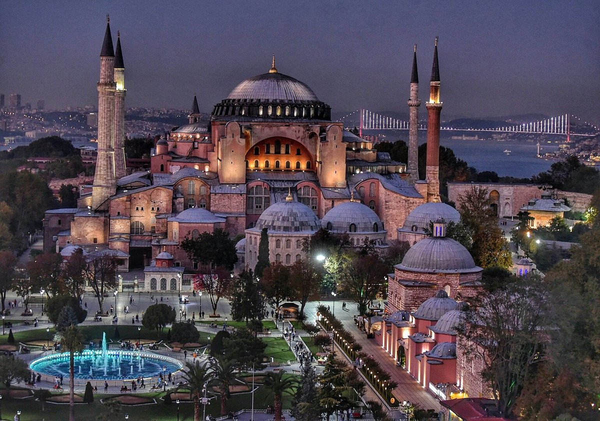
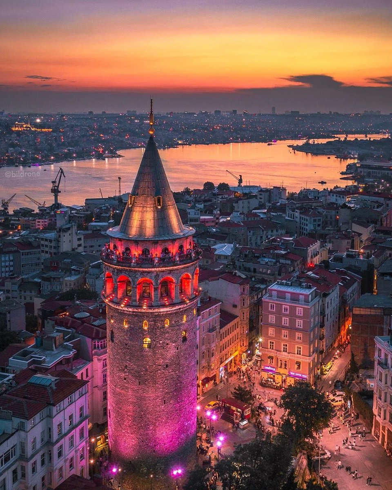
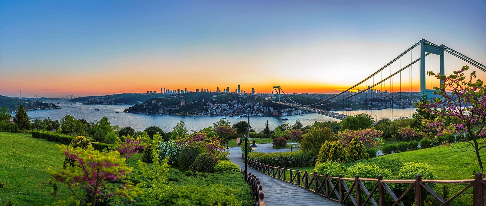
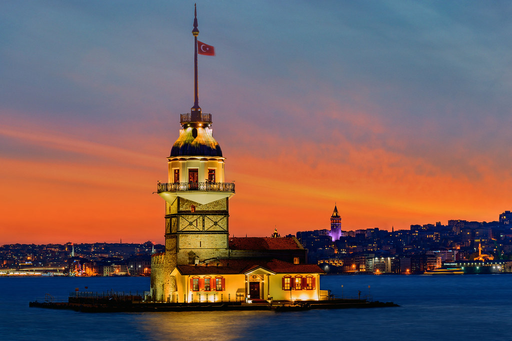
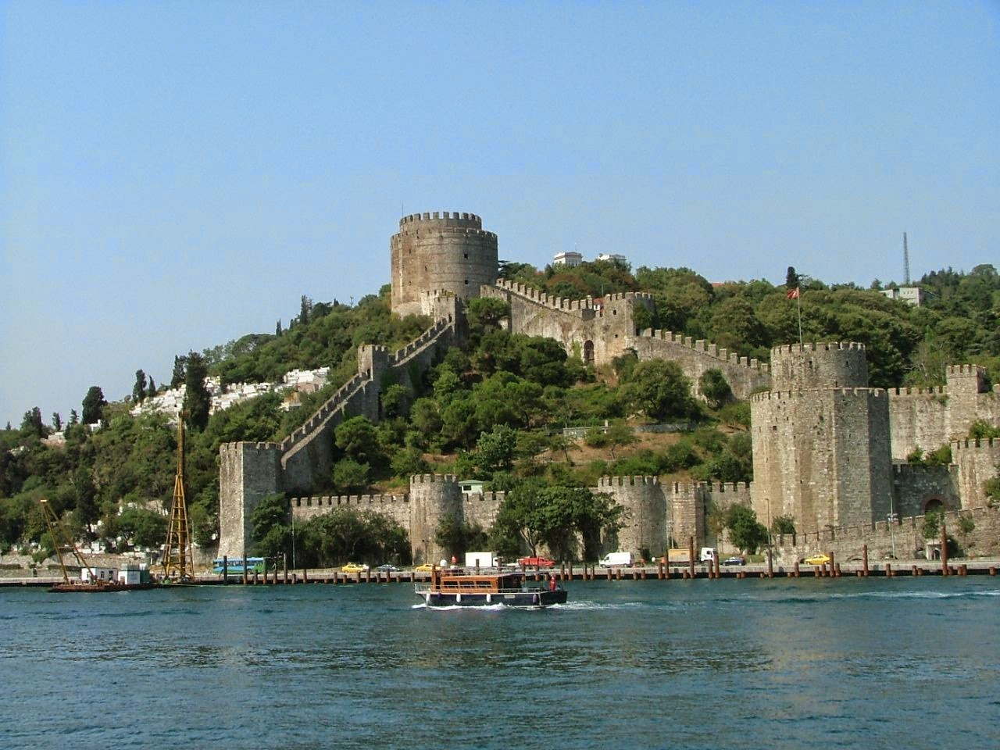
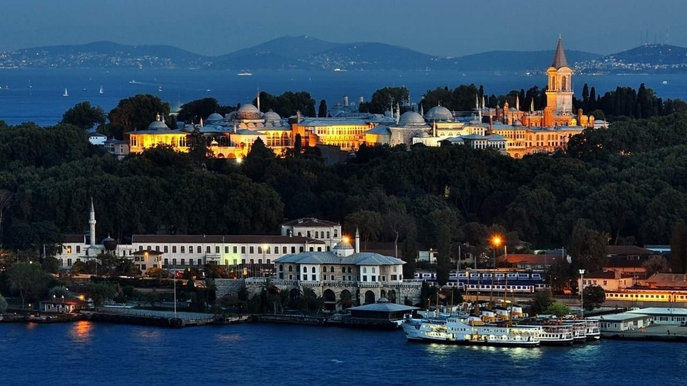
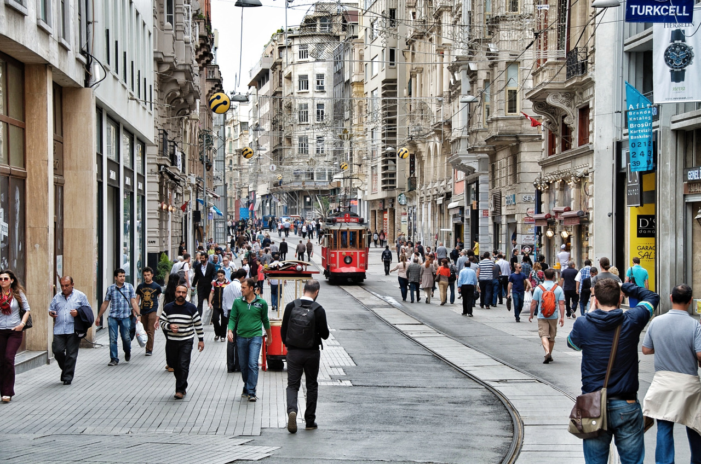
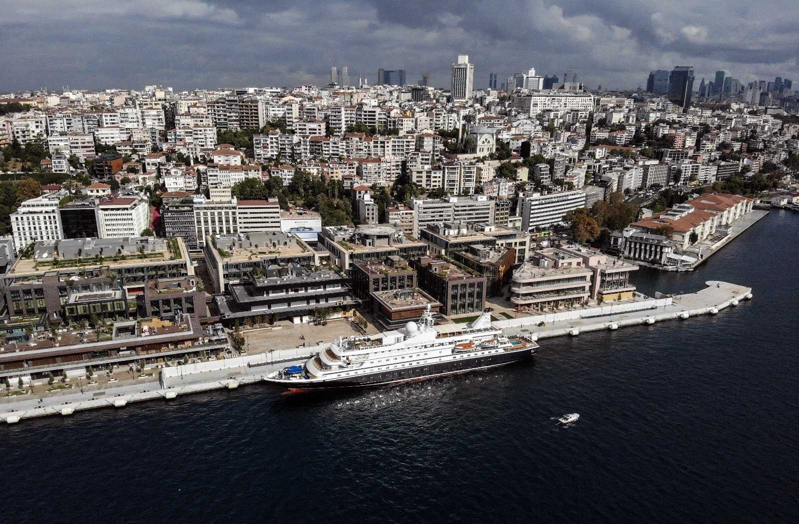
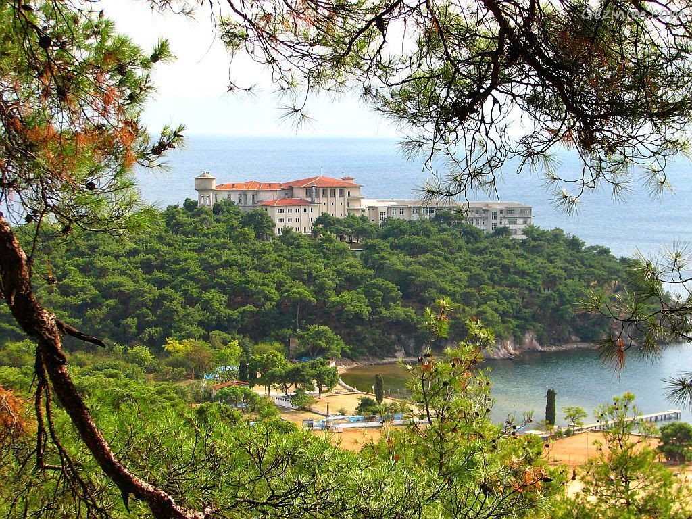
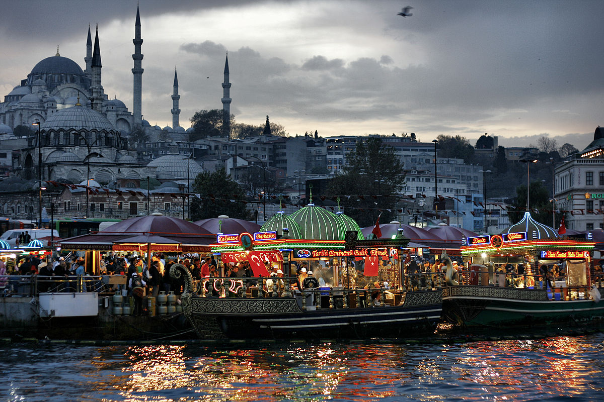

(Ayasofya/İSTANBUL) |
AYASOFYAAyasofya (anlamı: "Kutsal Bilgelik"; Grekçe: Ἁγία Σοφία, romanize: Agia Sofia), eski adıyla Kutsal Bilgelik Kilisesi ve Ayasofya Müzesi veya günümüzdeki resmî adıyla Ayasofya-i Kebîr Câmi-i Şerîfi (Kutsal Büyük Ayasofya Camii)[4][5], İstanbul'da yer alan bir cami ve eski bazilika, katedral ve müzedir. Bizans İmparatoru I. Justinianus tarafından, 532-537 yılları arasında İstanbul'un tarihî yarımadasındaki eski şehir merkezine inşa ettirilmiş bazilika planlı bir patrik katedrali olmuştur. 1453 yılında İstanbul'un Osmanlılar tarafından fethedilmesinden sonra II. Mehmed tarafından camiye dönüştürülmüştür. Mustafa Kemal Atatürk tarafından 1934 yılında yayımlanan Bakanlar Kurulu Kararnamesi ile müzeye dönüştürülmüş, kazı ve tadilat çalışmaları başlatılmış ve 1935'ten 2020'ye kadar müze olarak hizmet vermiştir. 2020 yılında ise müze statüsü iptal edilerek cami statüsü verilmiştir. Ayasofya, mimari bakımdan merkezî planı birleştiren kubbeli bazilika tipinde bir yapı olup, kubbe geçişi ve taşıyıcı sistem özellikleriyle mimarlık tarihinde önemli bir dönüm noktası olarak ele alınır. Hristiyanlar için hem sembolik hem de eksen olma anlamının yanında, turistik ve ruhsal bir çekim merkezidir. |

(Beyoğlu/Galata) |
GALATA KULESİGalata Kulesi, Bizans İmparatorluğu döneminde, Galata semtinin Ceneviz kolonisi olduğu on dördüncü yüzyıl ortalarında, Cenevizliler tarafından, Galata surlarının bir parçası olarak inşa edilmiştir. Osmanlı döneminde bir süre zindan olarak kullanıldıktan sonra, yangın gözetleme kulesine çevrilmiştir. Zaman zaman deprem ve yangınlarla tahrip olan kule, Osmanlı döneminde birkaç kez tadilat geçirmiştir. 1960’lı yıllara gelindiğinde bir hayli harap durumda olan kule, İstanbul Belediyesi tarafından restore edilerek ziyarete açılmıştır. Galata Kulesi 2020 yılında Vakıflar Genel Müdürlüğü tarafından yeniden restore edilmiş, sonradan eklenen betonarme unsurlar ve afeterya kaldırılarak, müze işleviyle kapılarını ziyaretçilere yeniden açmıştır. Galata Kulesi müzesinde, tarihöncesi dönemlerden itibaren yerleşime sahne olan ve üç büyük imparatorluğa, yaklaşık on altı yüzyıl boyunca başkentlik yapan İstanbul’un tüm dönemlerini yansıtan eserler sergilenmektedir. 20. yüzyılın ortalarına kadar İstanbul’daki en yüksek yapılardan biri olan Galata Kulesi’nin en üst katı, İstanbul'un en güzel panoramik manzaralarından birine sahiptir. Kule, Akdeniz ve Karadeniz’deki Ceneviz Kuleleri ile birlikte Unesco’nun geçici miras listesinde yer almaktadır. |

(Çamlıca/Otağtepe) |
ÇAMLICA TEPESİÇamlıca Tepesi, İstanbul’un şarkılara konu olmuş meşhur 7 tepesinden biridir. Küçük Çamlıca ve Büyük Çamlıca tepesi olarak iki tepeden oluşmaktadır. 360 derece görüş alanı ile şehri ayaklarınızın altına seren bu ünlü tepe, tarihi boyunca aşıklar tepesi olarak nam salmış, İstanbul’un ünlü şairleri bu tepede şehri izleyerek, şiirler yazmıştır. Osmanlı döneminin önemli padişahlarından IV. Murad burayı çok sevdiği için, Bağ-ı Cihan Kasrını inşa ettirmiştir. Tamamen halkın kullanımına açık olan tepe, her sosyal sınıftan ve yaştan ziyaretçiler ile yaz ve kış dolup taşmaktadır. Yeni evli çiftler için dış çekim yapılabilecek ender yerlerden biridir. Özellikle hava kirliliğinin her geçen gün arttığı metropol de Çamlıca Tepesi temiz havası ve rengarenk çiçeklerinin kokusu ile sizi mutlu edecektir. Lale festivali zamanı belediye Çamlıca Tepesini, laleler ile donatmaktadır. Çamlıca tepesi şehrin en yüksek tepesi olduğu için burada, radyo vericileri ve GSM operatörlerine ait baz istasyonları bulunmaktadır. Bu durum her ne kadar tepenin doğal yapısını ve ambiyansını bozsa da başka bir alternatif olmadığı için mecburen başka şekilde çözülememektedir. |

(Üküdar/İSTANBUL) |
KIZ KULESİİstanbul’un Üsküdar ilçesinde küçük bir adacığın içerisine inşaa edilen tarihi yapı, yaklaşık 18 metre yükseliğinde ve 5 kattan oluşmaktadır. Tarihi yapı günümüze kadar uzanan son Bizans yapısıdır. Kız Kulesi’nin tarihi milattan önceki zamanlara dayanmaktadır. Antik zamanlarda bu tarihi yapıya Atina Kralı Charles’in eşi olan Damalis adı verilmiştir. Tarihi yapıya “Kız Kulesi” adını veren ise Osmanlı’dır. Bizans Dönemi’nde ise “Arcla” (Küçük Kale) olarak bilinmektedir.Milattan önceden günümüze gelene kadar yaşanan depremler ve yangınlar neticesinde bu tarihi yapı kullanılmayacak hale gelmiştir. II. Mahmud döneminde Kız Kulesi restore çalışmaları sonrasında günümüzdeki şeklini almıştır. Tarihi yapı üzerine kaynaklar incelendiği zaman ilk kez M.Ö 410 yılında inşaa edildiği düşünülmektedir. Kız Kulesi, Atinalı Alkibiades tarafından boğazdaki gemi trafiğini denetlemek ve vergi almak amacıyla inşaa edilmiştir. Bu tarihi yapının günümüzdeki şeklinin kazanmasında önemli rol oynanan 2 etken vardır. II. Mahmud ile Roma Dönemi’dir. İmparator Manuel Comnenos’un emriyle kulenin etrafı kayalık ve kentin etrafı savunmaya yönelik dizayn edilmiştir. Kız Kulesi, Bizans’ın son zamanlarında Osmanlı kuşatmasından kurtarmak için Venedik filosuna barınak olmuştur.Cumhuriyet Dönemi’nde Deniz Kuvvetleri Komutanlığı tarafından Denizcilik faaliyetleri için bu tarihi yapı kullanılmıştır. 1995 – 2000 yılları arasında bu tarihi yapı geniş çaplı bir restore sürecine girmiştir. Restore çalışmalarının bitmesinin ardından bu tarihi yapı günümüzde müze ve restoran olarak işletilmektedir. |

(Sarıyer/İSTANBUL) |
RUMELİ HİSARIFatih Sultan Mehmet boğazdan gelebilecek saldırıları önlemek ve gözetleme kulesi olarak Anadolu Hisarı’nın tam karşısına Rumeli Hisarı’nı inşa ettirmiştir. 15 Nisan 1452 yılında yapımına başlanan bu hisarın ne zaman tamamlandığı konusunda farklı bilgiler bulunmaktadır. Bu tarihi yapı farklı kaynaklarda başka isimlerle anıldığı için tam bir tarih söz konusu değildir. Buna rağmen, Zağanos Kuleleri’nde bulunan iki kitabe üzerinde yaklaşık 4 ay gibi bir süre içerisinde tamamlandığı belirtilirken, Süleymaniye Kütüphanesi’nde yer alan Şerh-i Tecriyd-i Ataik adlı eserde yapımın 139 günde bitirildiği yazılmıştır. Rumeli Hisarı Fatih vakfiyelerinde Kemalpaşazade, Aşıkpaşazade ve Kulle-i Cedide, Neşri tarihinde ise Yenice Hisar, Nişancı tarihlerindeyken Boğazkesen Hisarı gibi isimler ile anılmıştır. Bizans Dönemi’nden kalma parça taşlar ve Anadolu’nun farklı bölgelerinden getirilen malzemeler hisarın yapımında kullanılmıştır. Ekrem Hakkı Ayverdi’ye göre hisarın yapımında yaklaşık 300 usta, 750 civarı işçi, 200 arabacı, nakliyeci ve kayıkçı ç lıştığını belirtmektedir. Rumeli Hisarı‘nı kim yaptı sorusunun cevabı ise Fatih’in emri üzerine yaklaşık 1200 personelin çalışması ile inşa edilmiştir. 1509 yılında yaşanan deprem, 1746 yılındaki yangın felaketi sonrasında tarihi yapı eski önemini yitirdikten sonra yerli halk ahşap evler tasarlayarak barınma faaliyetleri için hisarı kullanmıştır. 1953 yılında Cumhurbaşkanı Celal Bayar tarafından görevlendirilen üç kadın Türk mimarı hisarı geniş çaplı bir yenileme sürecine alarak eski nostaljik görünümünü kazandırmıştır. |

(Fatih-Sarayburnu/İSTANBUL ) |
TOPKAPI SARAYIFatih Sultan Mehmet’in İstanbul’u fethinden sonra Devletin merkezi Edirne’den buraya taşındı. İstanbul kısa sürede imar edilerek adeta Devletin simgesi haline geldi. Bir süre sonra Fatih Sultan Mehmet, padişah ve ailesinin ikamet edeceği, Devlet işlerinin yürütüleceği Topkapı Sarayı’nı, Marmara ve Boğaziçi’ni aynı anda görebilen, her türlü tabiat güzelliğine sahip bir alana inşa ettirdi. Padişah ve Devlet adamlarının kurduğu vakıflar ile imar edilen şehir, Anadolu’dan gelen Türkmenlerin iskanı ile Türkleştirildi. Yerli Hristiyan halkın İstanbul’da kalması sağlanarak şehir dünya şehri haline getirildi. Bunun yanında Topkapı Sarayı, yapısı ve işlevi bakımından kısa sürede bir şehir konumuna geldi. Öyle ki Topkapı Sarayı; geniş avlular, köşkler, kasırlar, camiler, divanlar, Devlet daireleri, kütüphaneler, koğuşlar, mutfaklar, çeşmeler ve bahçelerden oluşuyordu. Denizden ve karadan Saray’a açılan kapılar vardı. Saray’ın surlarının çevresinde üst düzey Devlet yöneticilerin konutları bulunuyordu. O dönem kasır (köşk), ve konak denilen konutlar, saray ve çevresinden soyutlanamamış, halkın oturduğu alanlara dağılmayıp bir arada toplanmıştı. Diğer yandan Topkapı Sarayı, Devletin merkezi olduğundan çeşitli ülkelerden gelen elçiler burada kabul edildi. Padişahın tahta çıkışında yapılan cülus törenleri, bayramlaşma törenleri burada yapıldı. Müslüman olsun gayrimüslim olsun reaya, sorunlarını çözmek için Topkapı Sarayı’na geldi. Bu yüzden de Topkapı Sarayı etrafında birçok cami, han, çarşı, medrese, tercüme büroları, park, bahçe gibi tesisler inşa edilerek şehir kültürü bu bölgede hızla gelişti. Topkapı Sarayı; padişahın hizmetkarlarının bulunduğu enderun (iç saray), birun (dış saray) ile padişahın özel hayatını geçirdiği harem olmak üzere üç bölümden oluşuyordu |
GEZİLECEK DİĞER YERLER

(Beyoğlu/İSTİKLAL CADDESİ) |

(Galataport/İSTANBUL) |

(HEYBELİADA) |

(EMİNÖNÜ) |